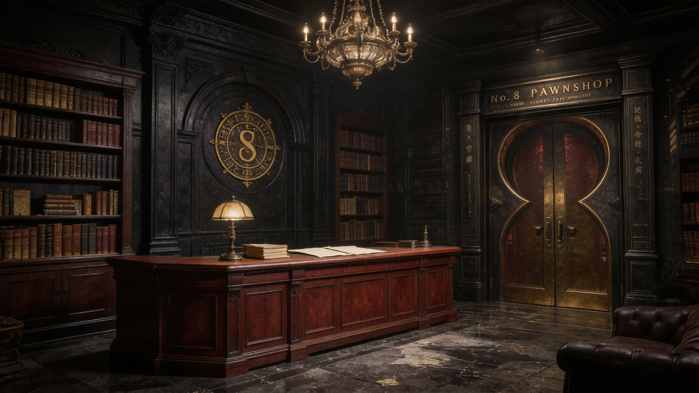
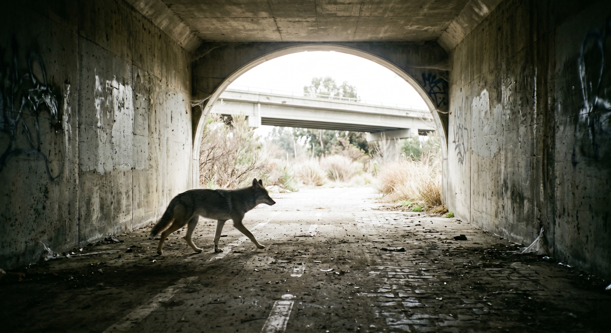

01
动态视觉能力
用短循环、视频封面和项目片段，让合作方在几秒内看到节奏、质感与执行力。
02
精选项目
每个案例强调背景、角色、成果和可观看的视觉素材。
02A
TYC 视觉场景作品
以电影感场景、奇幻写实空间和氛围叙事，展示个人视觉方向与画面控制力。


03
关于十行文化
我是一名商业影像合成与动画包装设计师，职业路径从湖南广电体系开始，之后参与视觉内容公司的合伙经营，目前以一人公司形式承接项目。 自由职业与公司项目期间，我长期服务上海视觉 / 内容制作公司，为其提供动画包装、实拍合成与商业成片质感控制支持，并参与腾讯、米哈游等大厂相关项目链路。 目前正在从传统后期执行与视觉包装，转向 AIGC 视觉增强和导演型影像创作：把实拍合成、三维/AI素材整合、画面修复与动态包装经验结合起来，形成更高效、更具表达力的商业影像工作流。
04
联系合作
适合品牌视觉、视觉动画、项目提案、内容包装与跨团队创意协作。